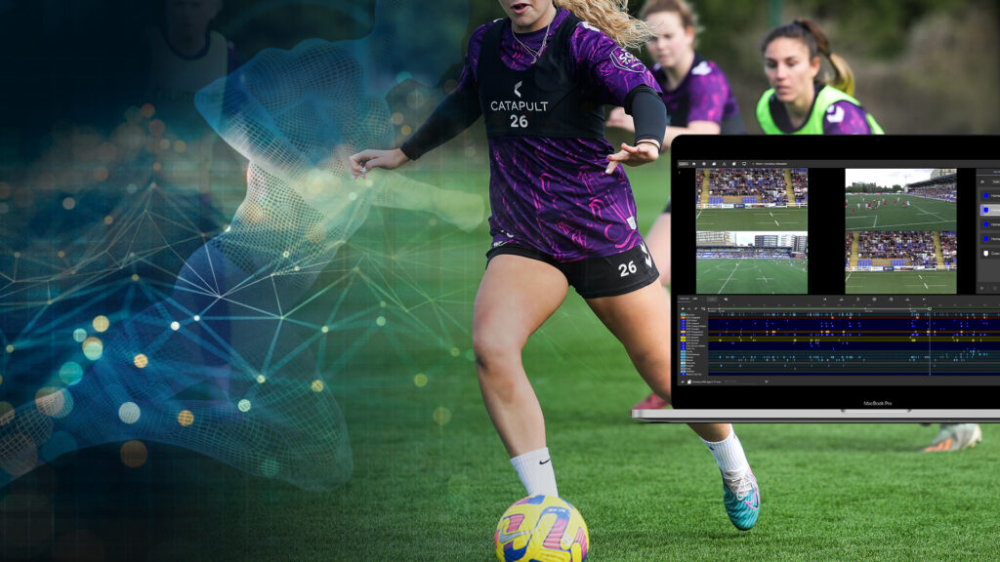

На главную
Практические задание №1
Новости
Футбол

Бразильская конфедерация футбола и Catapult заключили знаковое партнерство для улучшения результатов спортсменов.
Это партнерство знаменует собой важнейшее достижение в области повышения результативности спортсменов в бразильском футболе и обещает открыть новую эру принятия решений на основе данных и оптимизации результатов на всех уровнях футбола.
20 июня 2024 года
CBF использует передовую технологию Catapult
Сегодня компания Catapult объявила об эксклюзивном партнерстве с Бразильской конфедерацией футбола (CBF). Это сотрудничество преобразует инфраструктуру бразильского футбола, поскольку CBF использует передовые решения Catapult для мониторинга спортсменов во всех мужских, женских, молодежных и футзальных командах, предоставляя данные и информацию о конкретных спортсменах.
"Это партнерство очень важно для CBF и для всех профессионалов, связанных с нашим футболом", - сказал Эдналдо Родригес, президент Бразильской конфедерации футбола.
Знаменательное сотрудничество: Комплексный подход к мониторингу спортсменов
Это партнерство знаменует собой важнейшее достижение в области повышения результативности спортсменов в бразильском футболе и обещает открыть новую эру принятия решений на основе данных и оптимизации результатов на всех уровнях футбола.
Catapult распространит свои решения по мониторингу спортсменов на широкий спектр лиг, входящих в CBF, включая мужской и женский бразильский национальный футбол, U20, U17, U15 и футзал. Кроме того, впервые в Латинской Америке все судьи в Серии А будут контролироваться с помощью технологии Catapult.
Решения Catapult разработаны для получения критически важных данных об эффективности спортсменов, значительного снижения рисков травматизма и упрощения протоколов возвращения в игру.
Ссылка на сайт
